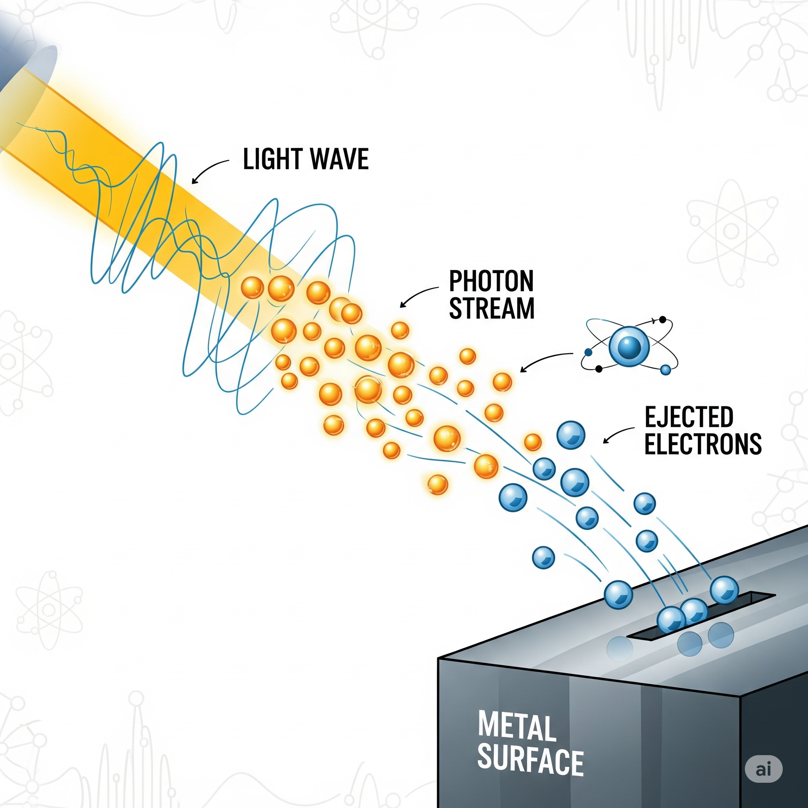

挑戦することの
贈り物
言葉が遅いと心配された少年が、やがて「20世紀最高の物理学者」と呼ばれるまでに至った背景には、型破りな発想力と、誰もが信じる「常識」に疑問を投げかける勇気がありました。
この章では、アインシュタインの生涯と、彼がわたくし達に遺した「挑戦することの大切さ」について探っていきます。
アルバート
アインシュタイン
現代物理学の基礎を築くのみならず、GPS技術から原子力エネルギーに至るまで、私たちの日常生活に深く関わっています。
1905年の「奇跡の年」は、アインシュタインの生涯の中で最も重要な一年でした。この年に5つの革命的論文を発表し、現代物理学の基礎を築く革新的な理論を次々と打ち立てました。具体的には、光電効果の論文で光が粒子として振る舞うことを示し、ブラウン運動の解析で原子の存在を統計的に裏付け、特殊相対性理論で時間と空間の概念を再定義しました。さらに、質量とエネルギーの等価性を示す有名な式 \(E = mc^2\) を導き、エネルギー観に決定的な転換をもたらしました。これらの成果は、単に理論的な枠組みを変えただけでなく、のちの技術革新にも深い影響を与えています。
1905年の奇跡の年
1905年の「奇跡の年」は、アインシュタインの生涯の中で最も重要な一年でした。この年に5つの革命的論文を発表し、現代物理学の基礎を築く革新的な理論を次々と打ち立てました。具体的には、光電効果の論文で光が粒子として振る舞うことを示し、ブラウン運動の解析で原子の存在を統計的に裏付け、特殊相対性理論で時間と空間の概念を再定義しました。さらに、質量とエネルギーの等価性を示す有名な式 \(E = mc^2\) を導き、エネルギー観に決定的な転換をもたらしました。これらの成果は、単に理論的な枠組みを変えただけでなく、のちの技術革新にも深い影響を与えています。
5つの論文の概要は次のとおりです。
- 光量子仮説（光電効果） — 「光の生成と変換に関する一つの発見的見解」
- 光をエネルギーの塊（量子）として扱い、光電効果を説明。
- ブラウン運動 — 「熱の分子運動論が要求する液体中の懸濁粒子の運動について」
- 微粒子の不規則運動を解析し、原子・分子の実在を統計的に裏付け。
- 特殊相対性理論 — 「運動している物体の電気力学」
- 同時性の相対性、時間の遅れ、長さの収縮、光速度不変などを導出。
- 質量とエネルギーの等価性 — 「物体の慣性はそのエネルギー含有量に依存するか？」
- 有名な等式 \(E=mc^2\) を示し、質量とエネルギーの同等性を確立。
- 分子の大きさ（学位論文） — 「溶液中の分散物質のサイズの新しい決定」
- 分子の大きさ・アボガドロ数を評価する方法を提示し、物質観に実証的基盤を与えた。
function main() {
console.log("0123456789012345678901234567890");
}function main() {
console.log("01234567890123456789012345678901234567890123456789012345678901234567890123456789");
}サンプルコード
// サンプルJavaScriptファイル
function fibonacci(n) {
if (n <= 1) return n;
return fibonacci(n - 1) + fibonacci(n - 2);
}
function factorial(n) {
if (n <= 1) return 1;
return n * factorial(n - 1);
}
// メイン処理
function main() {
console.log("フィボナッチ数列 (10項目):", fibonacci(10));
console.log("5の階乗:", factorial(5));
}
// 実行
main();
// サンプルJavaScriptファイル
function fibonacci(n) {
if (n <= 1) return n;
return fibonacci(n - 1) + fibonacci(n - 2);
}
function factorial(n) {
if (n <= 1) return 1;
return n * factorial(n - 1);
}
// メイン処理
function main() {
console.log("フィボナッチ数列 (10項目):", fibonacci(10));
console.log("5の階乗:", factorial(5));
}
// 実行
main();
サンプルコード 範囲指定
// メイン処理
function main() {
console.log("フィボナッチ数列 (10項目):", fibonacci(10));
console.log("5の階乗:", factorial(5));
}生い立ち・青年期
1879年3月14日 - ドイツ帝国ヴュルテンベルク王国ウルム生まれ
- 家族: ユダヤ系ドイツ人、父ヘルマン（電気技師）、母パウリーネ
- 幼少期: 言葉の発達が遅く、「のろま」と呼ばれることも
- 1880年 - 家族でミュンヘンに移住
- 1894年 - 家族がイタリアに移住、アインシュタインは単身スイスへ
- 1896年 - スイス連邦工科大学（ETH）入学
- 1900年 - 同大学卒業、スイス国籍取得
特許庁時代（奇跡の年）
- 1902年 - ベルンの特許庁に技術者として就職
- 1903年 - ミレヴァ・マリッチと結婚
1905年 - 「奇跡の年（Annus Mirabilis）」 この年に5つの革命的論文を発表：
- 光電効果の理論 - 量子論の基礎（1921年ノーベル物理学賞受賞理由）
- ブラウン運動の理論 - 原子の存在を証明
- 特殊相対性理論 - 時間と空間の概念を革新
- 質量とエネルギーの等価性 - E=mc²の発見
- 分子の大きさの決定
学術界での活躍
- 1909年 - チューリッヒ大学教授
- 1911年 - プラハ・ドイツ大学教授
- 1912年 - ETH教授として復帰
- 1914年 - ベルリンのプロイセン科学アカデミー会員
1915年 - 一般相対性理論を完成
- 重力を時空の歪みとして説明
- ニュートン力学を包含する新理論
1919年 - 皆既日食観測により一般相対性理論が実証される
- 世界的名声を獲得
ナチス時代とアメリカ移住
1921年 - ノーベル物理学賞受賞（光電効果の理論的解明）
1933年 - ナチス政権成立によりドイツを離れる
- プリンストン高等研究所（アメリカ）に移住
- 「神はサイコロを振らない」- 量子力学の確率的解釈に反対
1939年 - ルーズベルト大統領に原爆開発を促す手紙を送付
- マンハッタン計画のきっかけの一つ
晩年の活動
統一場理論の探求
- 電磁気力と重力を統一する理論を模索
- 生涯をかけて取り組むも未完成
社会活動
- 平和主義者として核兵器廃絶を訴える
- 公民権運動を支援
- イスラエル建国を支持、初代大統領就任を要請されるも辞退
1955年4月18日 - プリンストンで死去（76歳）
- 最期まで統一場理論の計算式を書いていた
主な業績と影響
科学的貢献
- 相対性理論: 現代物理学の基礎
- 量子論: 光電効果の説明
- 宇宙論: 膨張宇宙モデルの基礎
- 統計力学: ブラウン運動の理論
現代への影響
- GPS衛星: 相対論的補正が必要
- 核エネルギー: E=mc²の実用化
- レーザー: 誘導放出の理論
- 宇宙物理学: ブラックホール、重力波の予言
人物像
性格・思想
- 好奇心旺盛: 「重要なのは疑問を止めないことだ」
- 独立精神: 権威に屈しない自由な思考
- 平和主義: 戦争に反対、人類愛を重視
- ユーモア: 舌を出した写真で有名
名言
- 「想像力は知識より重要である」
- 「人生とは自転車のようなものだ。倒れないようにするには走らなければならない」
- 「私は天才ではない。ただ人より長く一つのことと付き合ってきただけだ」
- 「困難の中にこそチャンスがある。」
- 「天才とは、努力する凡才のことである。」
- 「失敗や挫折をしたことがない人とは、何も新しいことに挑戦したことが無いということだ」
アインシュタインは20世紀最大の物理学者として、科学のみならず哲学、社会思想にも大きな影響を与え、現代文明の基礎を築いた偉大な知性でした。
エピソード
1. 舌を出した有名な写真
1951年3月14日（72歳の誕生日）
- 記者たちに囲まれて疲れ果てたアインシュタイン
- 車に乗り込む際、またもやカメラを向けられる
- 突然舌をべろっと出してポーズ
- 本人のコメント: 「この写真は私の気に入っている。なぜなら、全人類に向けて舌を出しているからだ」
- この写真は世界中で愛され、今でもポスターやTシャツに使われている
2. 髪型についての自虐ネタ
- アインシュタインの特徴的なボサボサ頭について質問された時
- 「私の髪型には深い理由があるんです」
- 「朝起きて鏡を見ると、髪が相対性理論を実証しているんです」
- 「つまり、時間と空間が歪んでいることの証拠ですね」
- 実際は単に髪を整えるのが面倒だっただけ
3. 数学の天才への皮肉な返答
ある記者が質問：
- 記者: 「先生、音の速度はご存知ですか？」
- アインシュタイン: 「知りません」
- 記者: 「えっ、天才なのに知らないんですか？」
- アインシュタイン: 「私は本や辞書に載っていることを覚える必要はありません。重要なのは、どこでそれを調べられるかを知っていることです」
4. 靴下を履かない理由
- アインシュタインは靴下を履かない習慣で有名
- 理由を聞かれた時の答え：
- 「靴下には穴が開く。穴が開くと指が出る。だったら最初から履かなければいい」
- 「これは予防医学の応用です。問題が起こる前に解決策を講じるのです」
- 実用的でありながら、いかにもアインシュタインらしい論理的思考
5. バイオリンでの失敗談
- アインシュタインはバイオリンが趣味だったが、あまり上手ではなかった
- ある演奏会で友人と二重奏を披露
- 途中で完全にリズムがずれてしまう
- 友人: 「アルバート、君は数えることができないのか？」
- アインシュタイン: 「数えることはできる。でも音楽では1、2、3、4じゃなくて、1、2、3、∞になってしまうんだ」
6. 「神はサイコロを振らない」の続き
- 量子力学の確率的解釈に反対して言った有名な言葉
- しかし、後に量子力学の発展を見て
- 「神はサイコロを振らないと言ったが、神がどこにサイコロを隠しているかまでは言わなかった」
- 自分の発言を茶化す余裕を見せた
7. プリンストンでの日常
- 毎日同じ道を散歩していたアインシュタイン
- 近所の子供たちが「おじいちゃん、今日も数学の問題考えてるの？」と声をかける
- 「いや、今日は靴紐の結び方を考えているんだ。これも立派な位相幾何学の問題だからね」
- 子供たちには「？？？」だったが、本人は大真面目
8. 近所の数学の先生
1940年代、プリンストン時代のエピソード
- アインシュタインは、近所の小学生の母親から「息子の数学の宿題を手伝ってほしい」と頼まれたことがありました。
- 彼は快く引き受け、その少年に数学を教え始めました。
- ある日、少年が「難しい数学の問題があるんだけど...」と悩んでいると、アインシュタインは「ちょっと待って」と言って、電話をかけました。
- 電話の相手は、かの有名な数学者のクルト・ゲーデル。アインシュタインは「ねえ、クルト。ちょっと面白い問題があるんだけど、聞いてくれるかい？」と切り出しました。
- ゲーデルはその問題を解き、アインシュタインはその解法を少年に説明しました。
- 後日、少年が「あの電話の人は誰だったの？」と尋ねると、アインシュタインは「ああ、彼は世界で一番頭の良い数学者だよ。でも、君もきっとなれるさ」と笑いながら答えたそうです。
挑戦なきところに
失敗はない
$$ \begin{aligned} 9 \times \phantom{0}1 &= \phantom{0}9 \\ 9 \times \phantom{0}2 &= 18 \\ 9 \times \phantom{0}3 &= 27 \\ 9 \times \phantom{0}4 &= 36 \\ 9 \times \phantom{0}5 &= 45 \\ 9 \times \phantom{0}6 &= 54 \\ 9 \times \phantom{0}7 &= 63 \\ 9 \times \phantom{0}8 &= 72 \\ 9 \times \phantom{0}9 &= 81 \\ 9 \times 10 &= \mathbf{91} \end{aligned} $$
クラスは騒然とし、学生達は思わず笑った。 アインシュタインが答えを間違えたからだ。 9×10の答えは91ではなく、90である。
やがて笑いが収まると、アインシュタインは静かに語り始めました。
わたくしが九つの問題を正しく解いたことを、誰も祝福しなかった。しかし、たった一つの誤りに対して皆は笑い始めた。どれだけ成功を重ねても、人々は小さな失敗にばかり目を向ける。しかし、決して間違えない人がいる。それは、何も挑戦しなかった人である。
この言葉から、あなたは何を学びますか。
ページテスト用
特定の意味内容を読ませることが目的ではなく、むしろ様々な長さや構造の文章が連続する状況を意図して作られています。したがって語彙は一般的で、文末表現も過度に偏らないよう配慮しています。読みやすさと見た目の整合性、そして行長の印象が意図どおりであるかを総合的に確かめてください。
人は文章を読むとき、内容の理解だけでなく、無意識のうちにレイアウトの手がかりを辿っています。段落の切れ目、行間の呼吸、見出しの階層、字面の軽重、行頭・行末の揃い、ページ番号の位置。いずれも、読み手の視線がどこへ移動すべきかを導く重要な要素です。行が詰まりすぎれば息が詰まり、緩みすぎれば情報の秩序が弛緩します。適切な密度は、内容の重さと媒体の目的によって変化しますが、教育的な文脈では、読み手が初学者である可能性を考慮し、やや大きめの本文サイズと安定した行間を選ぶのが妥当でしょう。本書ではその基準に合わせ、文字サイズ、字間、行長、行数の調和を目指しています。
視覚的な快適さは、一箇所の数値で決定されるものではありません。例えば、本文サイズを拡大すると、単純に行長が短くなり、改行回数が増えます。これによりリズムは変わり、ページあたりの情報量も減少します。その不足分を補うために行数を増やせば、今度は行送りが窮屈になり、行間で視線が迷子になりがちです。余白を削ってボディ領域を広げれば、周囲の呼吸が損なわれ、見出しや図版の存在感が過度に強く感じられることもあります。よって、単独の最適値は存在せず、相互調整の中で“ちょうどよい”を見つけていく作業が必要です。
また、和文組版では句読点や括弧類の扱いが可読性に大きく関わります。約物の直前直後に適切なアキを確保することで、語と語の境界が乱れず、視線が引っかからない読み心地を実現できます。禁則の設定が不適切だと、行末に不自然な約物が残り、ページ全体の整列感が損なわれます。とりわけ教育的文章では、小さなストレスが理解の妨げになり得るため、細部の整えは看過できません。本ダミー本文では、さまざまな記号や括弧の出現頻度を適度に散らし、連続時の見え方や行分割の癖を点検しやすくしています。
段落の長短も重要です。短い段落が続くと、ページは軽快に見える一方で、情報のまとまりが細切れに感じられることがあります。逆に長い段落が続けば、視線の休みどころが失われ、読了感が重くなります。そこで、短文と中程度の段落、やや長めの段落を織り交ぜ、ページ単位の呼吸が均整を保つかを観察します。さらに、行頭の一字下げの有無、見出し直後の段落の扱い、箇条書きや引用の前後に入るアキ量など、周辺要素の一貫性も確認してください。小さな規則の積み重ねが、読み手にとっての“分かりやすさ”を裏打ちします。
教育現場では、本文の可読性だけでなく、注釈や図版、脚注等のサブ情報の扱いも重要です。本文と注の階層差が明確であれば、学習者は主従関係を誤解しにくくなります。見出しの級、本文のウェイト、コードやキーボード表記の書体差、数字の表現ルールなどを統一し、視覚的な優先順位を明瞭に保ちます。本テキストには専門語や固有名詞を過度に含めず、一般的な語彙で紙面の密度バランスのみを検証できるよう配慮しました。もし専門性の高い章に適用する場合は、実データでの再検証を別途行ってください。
ページをめくる体験も検証対象です。ページ下部に行が密集し過ぎると、ノンブルや柱の存在が埋もれ、紙面の終端の気配が薄れます。逆に上部のマージンが狭すぎると、冒頭行が窮屈に感じられ、章や節の始まりの“晴れやかさ”が損なわれます。上マージンと下マージンの均衡、左右マージンの相対的な広さ、本文ブロックの重心位置などを総合して、視線誘導が素直に働くかを観察してください。見出しやキャプション、数式や表を挿入した場合にも、本文との距離感が破綻しないことが望まれます。
最後に、紙面は“読む器”であると同時に、内容の価値を支える“静かな設計”でもあります。数値の根拠を持ちながらも、最終的には実物のページをめくり、違和感が残る箇所を一つずつ減らしていく作業が欠かせません。
本ダミー本文が、そうした丁寧な検証の一助となれば幸いです。十分に整った紙面は、読者の集中を妨げず、内容そのものの理解を助けます。適切な密度と確かな秩序、そして穏やかな余白が、学びの体験を豊かにするでしょう。
なお、この段落は字面の詰まり具合をもう一段確認するために、意図的にやや長く構成しています。もし行末処理や禁則の挙動に小さな乱れが見られる場合は、行送りを微調整し、文字数・行数・余白のいずれか一つに手を入れてください。
大きく動かすよりも、少しずつ整える方が、全体の調和を保ちやすく、予期せぬ副作用も少なく済みます。以上で検証用のダミーテキストは終わりです。紙面の見え方に問題がなければ、このまま利用して構いませんし、必要に応じて分量を増減させても差し支えありません。
-
表やリスト挿入時の行間と前後のアキが破綻しないか。
-
画像の縦横比・配置とキャプションの距離感が適切か。
- 英数字や記号が連続する箇所の字間が不自然に詰まらないか。
- ルビ・脚注・参照リンクが本文のリズムを阻害しないか。
- コードやキーボード表記が本文と十分に差別化されているか。
- 行頭禁則・行末禁則が期待どおりに機能しているか。
- 柱・ノンブル・見出しの視覚的優先順位が保たれているか。
-
章扉や挿話的要素の前後で余白設計が一貫しているか。
-
目次・索引などナビゲーション要素の可読性が担保されているか。
-
画面表示とPDF出力で想定外の差異が生じていないか。
-
本文の字面が均整しているか。
-
見出しが本文と適切に階層化されているか。
-
画像や表が本文と適切に配置されているか。
-
脚注や参照が本文の流れを妨げていないか。
- 索引や目次がナビゲーションに役立っているか。
- ページ送りや行送りがスムーズに感じられるか。 a. 余白が適切に設定され、本文が読みやすいか。 b. 本文中のリンクや参照が正確に機能しているか。
- 画像や図表が本文の内容を補足しているか。
写真や図表の配置
以下に、本書で使えるレイアウト用コンテナの実例を示します（VFMの 記法）。用途に応じて選択してください。
写真のタイル配置（pictures）
ページ幅に応じて自動的に2〜3列に整列します。

左:画像 右:本文（img-text）
図版の説明を右側に配置したい場合に使用します。
複数段落の説明も可能です。
左:本文 右:画像（text-img）
説明を先に読み、右で図を確認させたい配置です。

画像幅70%の例です。
部分二段組（text-2dan）
長い説明文や箇条書きを紙面効率よく配置したいときに使います。既存のエイリアス two-col でも可。
- 公開年表：1905年は「奇跡の年」
- ブラウン運動の理論的説明
- 光電効果と量子の導入
- 特殊相対性理論と同時性の相対性
この段落は二段で組まれます。紙面の流れに応じて、段組ブロックの前後に適切なアキを確保してください。
表の配置
| 表名 | 表の説明 |
|---|---|
| 表1 | 表の説明 |
| 表2 | 表の説明 |
3 x 3 の表
| 物理テーマ | 関係式/値 | 説明 |
|---|---|---|
| 光電効果 | E = hν − φ | 入射光の周波数が閾値を超えると、金属表面から電子が放出される現象。仕事関数 φ が材料ごとに異なる。 |
| 特殊相対性の同時性 | — | 観測者の運動状態に依存して同時性が崩れる。高速運動系では出来事の前後関係や同時性の直感が成り立たない。 |
| ブラウン運動 | — | 液体中の微粒子が不規則に運動する現象。統計物理により拡散係数と関連づけられ、原子の存在を裏づけた歴史的事例。 |
5 x 3 の表
| 現象 | 代表式/関係 | 定数・単位系 | 代表例 | 備考 |
|---|---|---|---|---|
| 光電効果 | E = hν − φ | h: プランク定数, φ: 仕事関数 | Na, K などアルカリ金属 | しきい周波数が存在、強度ではなく周波数が鍵となる |
| ブラウン運動 | ⟨x²⟩ = 2Dt | D: 拡散係数 [m²/s] | 花粉粒子の顕微観察 | 温度・粘性と関係、統計的取り扱いが有効 |
| 相対性（エネルギー） | E² = (pc)² + (mc²)² | c: 光速, m: 静止質量 | 高エネルギー粒子 | 静止系では E = mc²、運動量項が入る一般形 |
列の配置（左・中央・右寄せ）
左寄せ:
| 項目 | 値 |
|---|---|
| 周波数 ν | 5.0×10^14 Hz |
| 仕事関数 φ | 2.3 eV |
中央寄せ:
| 項目 | 値 |
|---|---|
| 光速 c | 2.9979×10^8 m/s |
| プランク定数 h | 6.626×10^-34 J·s |
右寄せ:
| 項目 | 値 |
|---|---|
| エネルギー E | 1.60×10^-19 J |
| 運動量 p | 3.14×10^-24 kg·m/s |
混在（左・中央・右）:
| 物理量 | 単位 | 値 |
|---|---|---|
| 光速 c | m/s | 2.9979×10^8 |
| 電荷 e | C | 1.602×10^-19 |
画像幅70%の例です。